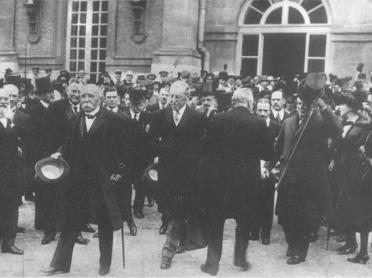

Clemenceau, Wilson, Baron Sidney Sonnino ve Lloyd George
Versay Antlaşması imzalandıktan sonra (28 Haziran 1919)
Versay Antlaşması’nın korunması, birbirini geçersiz hale getiren iki kavrama dayandırılmıştı. İlki çok geniş, ikincisi de çok nefretle dolu olduğu için başarısız oldu. Ortak güvenlik kavramı, barışı bozma olasılığı olan şartlara uygulanamayacak kadar genel nitelikteydi. Ortak güvenlik yerine geçen Fransız-İngiliz işbirliği ise, büyük Almanya’nın meydan okumalarına direnemeyecek kadar hafif ve kararsızlık içinde idi. Beş yıl geçmeden, savaşta yenilen iki büyük devlet Rapallo’da bir araya geldi. Almanya ile Sovyetler Birliği arasındaki artan işbirliği, Versay sistemine indirilen önemli bir darbe oldu; moralleri çok bozulduğu için, demokrasiler bu durumun önemini hemen kavrayamadılar.
Birinci Dünya Savaşı’nın sonunda, uluslararası uygulamalarda ahlak ve çıkarların rolü hakkındaki bir yüzyıllık çatışma, hukuk ve ahlakın üstünlüğü lehine sonuçlanmış gibi görünüyordu. Savaş felaketinin yarattığı şokun etkisi altında, birçok insan bir kuşağın bütün gençlerini yok eden Realpolitik türünden bir politikadan olabildiğince uzak, daha iyi bir dünya ümit ettiler. Amerika yalnızlık politikasına çekildi ise de, bu süreçte bir katalizör rolü oynamak üzere ortaya çıktı. Wilson’ın bıraktığı miras, Avrupa’nın, Amerika olmasa da istikrarı, geleneksel Avrupa tarzı ittifaklar ve güç dengesi yerine, ortak güvenlikle sağlamak şeklindeki Wilson görüşünü kabul etmesi idi.
Sonraki yıllarda Amerika kendisinin de katıldığı (NATO gibi) ittifaklar, genel olarak ortak güvenlik vasıtaları olarak tanımlandı. Bununla beraber, terimin orijinal algılanması böyle değildi; çünkü özünde ortak güvenlik kavramı ile ittifak kavramı taban tabana zıt kavramlardır. Geleneksel ittifaklar, belirli bir tehdide yönelmiştir ve paylaşılan ulusal çıkarlar veya ortak güvenlik endişeleri ile birbirine bağlanan bazı ülke grupları için kesin taahhütler içerir. Ortak güvenlik sistemi ise, herhangi bir belirli tehdidi tanımlamaz, hiçbir ülkeye güvence vermez ve ülkeler arasında ayırımcılık yapmaz. Bu sistem, teorik olarak barışa yönelen her tehdide direnmek amacıyla oluşturulmuştur; tehdidi kimin yaptığı ve kime karşı yapıldığı hiç önemli olmaksızın, ittifaklar daima olası bir düşmana karşı oluşturulur. Ortak güvenlik sistemi ise, soyut olarak uluslararası hukuku savunur. Ülke içi ceza kanunu, iç hukuk sisteminde ne işlev görüyorsa, uluslararası hukuk sisteminde de aynı işlevi görür. Bir ittifakta, tarafların çıkarlarına ve güvenliğine karşı saldırı, yani casus belli (Savaş nedeni)’dir. Ortak güvenlik sisteminde casus belli ise, bütün dünya halklarının ortak çıkarı olduğu kabul edilen sorunların, barışçıl yollarla çözülmesi prensibinin ihlalidir. Bu nedenle, kuvvet, her olayda barışı korumada ortak çıkarı olan değişik ülke gruplarından oluşturulur.
Bir ittifakta amaç, bir ulusal çıkar analizinden çok, önceden tahmin edilebilir, kesin bir yükümlülük ortaya koymaktır. Ortak güvenlik ise tamamen ters şekilde çalışır; prensiplerinin uygulanmasını, olay patlak verdiğinde ortaya çıkan özel şartların yorumuna bırakır ve bu da istemeden o anın ruh hali dolayısıyla ulusal iradeye fazla hoşgörülü davranır.
Ortak güvenlik, bütün devletler veya hiç değilse ortak savunma ile ilgili bütün devletler, sorunun doğası hakkında hemen hemen benzer görüşlere sahip ve olayın değerlendirilmesine göre güç kullanmaya veya yaptırım uygulamaya hazır iseler, güvenliği sağlarlar ve bunu yaparken, karşı karşıya bulunulan olaydaki özel ulusal çıkarları göz önüne almamaları gerekir. Ancak şartlar yerine getirilmişse, bir dünya organizasyonu yaptırım uygulayabilir veya uluslararası uygulamalarda hakem rolü oynayabilir. Wilson’ın, 1918 Eylülü’nde savaşın sonu yaklaşırken, ortak güvenlik sisteminden anladığı buydu:
“Ulusal amaçlar gittikçe geride kalmaya başladı ve aydınlanmış insanlığın ortak amaçları, onların yerini aldı. Sıradan insanların fikirleri, hâlâ bir güç oyunu oynadığını, hem de yüksek oynadığını sanan sofistike insanlarınkinden daha anlaşılır, ileri ve tutarlıdır.”{315}
Uluslararası anlaşmazlıkların nedenlerinin Wilsoncu yorumu ile Avrupa yorumu arasındaki önemli fark, bu sözlerde yansımaktadır. Avrupa tarzı diplomasi, ulusal çıkarların çatışma eğiliminde olduğunu kabul eder ve diplomasiyi, bunları uzlaştırmak için bir araç görür; diğer tarafta Wilson, uluslararası uyumsuzluğu gerçek bir çıkar çatışması olarak değil, “berrak olmayan düşüncenin” bir sonucu kabul eder. Realpolitik uygulamasında, devlet adamları özel çıkarlarla genel çıkarlar arasında, özendirmeler ile cezalar arasında bir denge ile bağlantı kurma görevini üstlendiler. Wilson’ın görüşüne göre, devlet adamlarının, evrensel prensipleri, özel olaylara uygulamaları gerekir. Bunun da ötesinde, devlet adamlarının kendileri anlaşmazlıkların sebebi olarak kabul edilmiştir; çünkü insanların uyumluluğa olan doğal eğilimlerini, anlaşılması zor ve bencil hesaplarla çarpıtanlar onlardır.
Versay’da birçok devlet adamının hareket tarzı, Wilson’ın beklentilerini yalancı çıkarmıştır, istisnasız, devlet adamlarının hepsi, ulusal çıkarları üzerinde ısrarlı oldular, ortak amaçların savunmasını, toprak sorunlarında Avrupai anlamda her hangi bir ulusal çıkarı olmayan Wilson’a bıraktılar, insafsız gerçek karşısında davadan vazgeçmemek ve çabalarını iki katına çıkartmak, peygamberlerin doğasında vardır. Wilson’ın Versay’da karşılaştığı engeller, kuşkusuz, onun kafasında yeni düzenlemenin geçerliliği konusunda kuşku yaratmadı. Tam tersine, bu yeni düzenin gerekliliği konusundaki inancını daha da kuvvetlendirdi. Cemiyetin ve dünya kamuoyunun, Antlaşmanın kendi koyduğu prensiplerden ayrılmış olan birçok hükmünü düzelteceği inancında idi.
Gerçekten de Wilson’ın ideallerinin gücü, güç dengesi politikasının doğduğu yer olan Büyük Britanya üzerindeki etkisi ile kendini gösterdi. Cemiyet Anasözleş-mesi hakkındaki resmi İngiliz yorumunda, “nihai ve en etkili yaptırımın, uygar dünyanın kamuoyu olması gerektiği”{316} belirtildi. Lord Cecil Avam Kamarası önünde şöyle söylüyordu: “Bizim dayanağımız kamuoyudur... eğer bu konuda hatalı isek, bütün sistem hatalı demektir.”{317}
Pitt, Canning, Palmerston ve Disraeli’nin politikasını izleyenlerin, kendiliklerinden bu inanca ulaşması olası görünmüyor. Başlangıçta, savaşta Amerikan desteğini sağlamak için Wilson politikası ile uyumlu gittikleri anlaşılıyor. Zaman geçtikçe, Wilson prensipleri İngiliz kamuoyunda akis bulmaya başladı. 1920’lerde ve 1930’larda, Büyük Britanya’nın ortak güvenliği savunması artık taktik gereği değildi. Wilsonizm, gerçek bir değişiklik yaratmıştı.
Sonunda ortak güvenlik, temel varsayımının, yani bütün ulusların belirli bir saldırı hareketine karşı direnmede aynı çıkara sahip olduğu ve ona karşı koyarken aynı riskleri göze almaya hazır olduğu varsayımının zayıflığının kurbanı oldu. Deneyim göstermiştir ki, bu varsayımlar yanlıştı. Büyük bir devletin taraf olduğu hiçbir saldırı hareketi, ortak güvenlik prensibinin uygulanması ile yenilmiş değildir. Dünya toplumu, ya bu hareketi saldırı olarak değerlendirmeyi reddetmiştir veya uygun yaptırım konusunda anlaşmazlığa düşmüştür. Yaptırım uyguladığı zaman ise, bu önlemler, mümkün olan en az ortak önlemler olmuştur ve bunlar öyle etkisiz kalmıştır ki, hiç alınmasa daha iyi olurdu.
Japonlar 1932’de Mançurya’yı işgal ettiği zaman, cemiyetin bir yaptırım mekanizması yoktu. Bu noksanlık giderildi ve Habeşistan’da İtalyan saldırısı ile karşılaşıldı. Cemiyet yaptırım uygulama kararı verdi; fakat “savaştan başka bütün yaptırımlar” sloganı ve petrol kesintisi tehdidi ile ilgili uygulama yapılmadı. Avusturya kuvvet zoruyla Almanya ile birleştirilince ve Çekoslovakya’nın özgürlüğü ortadan kalkınca, cemiyetin hiçbir tepkisi olmadı. Milletler Cemiyeti’nin son eylemi, Almanya, Japonya ve İtalya’nın ayrılmasından sonra, 1939’da Finlandiya’ya saldırısı nedeniyle Sovyetler Birliği’nin cemiyetten atılması oldu. Bu işlemin, Sovyetlerin hareketinde hiçbir etkisi olmadı.
Soğuk Savaş boyunca, Birleşmiş Milletler de büyük bir devletin saldırısını içeren her olayda aynı şekilde etkisiz kaldı. Bu hareketsizliğin nedeni, ya komünistlerin Güvenlik Konseyi’ndeki vetoları veya küçük devletlerin kendilerini ilgilendirmeyen sorunlar karşısında üzerlerine risk almaktan kaçınmaları idi. Birleşmiş Milletler, Berlin krizlerinde ve Sovyetlerin Macaristan, Çekoslovakya ve Afganistan’a müdahalelerinde ya etkisizdi, yahut saha kenarında idi. İki süper güç aralarında anlaşana kadar, Küba, Füze Krizi ile hiç ilgilenmedi. Amerika 1950’deki Kuzey Kore saldırısında Birleşmiş Milletler’in otoritesini göstermesini sağlayabildi çünkü Sovyet temsilcisi Güvenlik Konseyi’ni boykot etmişti ve Avrupa’da Sovyet saldırısı tehdidine karşı Amerika’yı yanlarına almak isteyen devletler Birleşmiş Milletler Genel Kurulu’nda hâlâ çoğunluğu oluşturuyorlardı. Birleşmiş Milletler, diplomatlarının buluşması için uygun bir yer ve fikir alışverişi için faydalı bir forum olduğunu gösterdi. Önemli teknik fonksiyonları da yerine getirdi. Fakat savaşı engelleme ve saldırıya karşı ortak direnme anlamına gelen temel varsayımını, ortak güvenliği yerine getirmekte başarılı olamadı.
Birleşmiş Milletler için bu söylenenler Soğuk Savaş sonrası devrede de doğrudur. 1991 Körfez Savaşı’nda, gerçekten de Amerika’nın hareketini onayladı; fakat Irak’ın saldırısına karşı direnmenin ortak güvenlik doktrininin bir uygulaması olduğunu söylemek zordur. Amerika uluslararası bir konsensüsün oluşmasını beklemeden tek taraflı olarak büyük bir seferi kuvveti harekete geçirdi. Diğer devletler, Amerika’nın hareketleri üzerinde etkiyi ancak sonuçta bir Amerikan girişimi olan harekete katılmakla sağlayabilirlerdi; veto hakkını kullanarak çatışma riskinden kaçınamazlardı. Bunlara ek olarak, Sovyet Birliği’nde ve Çin’deki iç ayaklanmalar, Güvenlik Konseyi’nin devamlı üyelerine Amerika’nın iyi niyetini sağlamak için bir fırsat yarattı. Körfez Savaşı’nda ortak güvenlik sistemi, Amerikan liderliğinin yerine geçmesi için değil, haklı çıkarılması için ileri sürüldü.
Kuşkusuz, ortak güvenlik kavramının ilk olarak diplomasiye sokulduğu o masum günlerde, henüz bu olaylardan ders alınmamıştı. Versay sonrası devlet adamları, silahlanmanın, gerginliklerin nedeni olduğuna, onun bir sonucu olmadığına kendilerini yarı yarıya ikna ettiler. Uluslararası diplomaside, şüpheciliğin yerini iyi niyet alırsa, uluslararası anlaşmazlıkların kökünden sökülüp atılacağına da ikna oldular. Savaştan duygusal bir çöküntü içinde çıkmasına rağmen, Avrupa liderleri, karşılaştıkları diğer bütün engelleri aşsalar bile, ortak güvenlik genel doktrininin işlemesinin, dünyanın en güçlü üç ülkesi sisteme dâhil edilmediği sürece mümkün olmadığını fark etmiş olmalıdırlar. Bu ülkeler; Birleşik Devletler, Almanya ve Sovyetler Birliği’ydi. Birleşik Devletler, Milletler Cemiyeti’ne girmeyi reddetti. Almanya, cemiyet dışında tutuldu ve parya muamelesi gören Sovyet Rusya, cemiyeti küçük görüyordu.
Savaş sonrası düzenden en çok acı çeken ülke, galip Fransa idi. Fransız liderleri, Versay Antlaşması hükümlerinin Almanya’yı devamlı olarak zayıf durumda tutamayacağını biliyorlardı. Son Avrupa savaşı olan 1854-56 Kırım Savaşı’ndan sonra, galip devletler olan Büyük Britanya ve Fransa, askeri hükümleri, yirmi yıldan az bir zaman süresince koruyabildiler. Napoleon Savaşları’nın hemen ardından, Fransa Avrupa Düzeni’nin tam üyeliğini elde etti. Her ne kadar Versay’dan sonra bütün Avrupa’ya askeri bakımdan hâkim gibi görünüyorsa da, Fransa’nın yalnızca üç yıl sonra Almanya karşısındaki devamlı zayıflaması gittikçe daha belirgin hale gelmişti. Fransa’nın muzaffer başkumandanı Mareşal Ferdinand Foch, Versay Antlaşması hakkındaki sözlerinde haklı idi: “Bu bir barış değildir, olsa olsa yirmi yıllık bir ateşkestir.”{318}
1924’te İngiliz kara kuvvetlerinin kurmayları, Almanya’nın İngiltere ile “bizi son savaşa getiren aynı şartların tekrarından ibaret”{319} nedenlerle savaşa gideceği tahminini yaparken aynı sonuca vardılar. Versay Antlaşması’nın kısıtlayıcı hükümlerinin, Almanya’nın silahlanmasını, Almanya’nın kendisini politik bakımdan Versay zincirlerini kıracak kadar kuvvetli hissetmesinden sonra en çok dokuz ay geciktireceğini savundular. Versay zincirlerini atması için de en fazla on yılın yeterli olacağı değerlendirmesini aynı kurmaylar yaptı. Fransız analistleri ile birlikte İngiliz kurmayları da Fransa’nın, bir “birinci sınıf büyük devlet”le askeri ittifak yapmadığı müddetçe çaresiz kalacağı görüşüne vardılar.
Ancak var olan tek birinci sınıf büyük devlet Büyük Britanya idi ve bu ülkenin politik liderleri, askeri danışmanlarının görüşlerini kabul etmiyorlardı. Aksine, politikaları, Fransa’nın zaten çok güçlü olduğu ve gereksinimi olan en son şeyin bir İngiliz ittifakı olduğu yanlış inancına dayandırılmıştı. Büyük Britanya liderleri, demoralize olmuş Fransa’yı, olası egemen güç olarak görüyor ve revizyonist Almanya’yı da kırgın ve teselliye gereksinimi olan taraf olarak değerlendiriyorlardı. Hem Fransa’nın askeri bakımdan hâkim olduğu, hem de Almanya’nın kötü muamele gördüğü konusundaki her iki varsayım da kısa vadede doğru idi; fakat İngiliz politikasının temel varsayımı olarak uzun vadede felaket yaratacak nitelikteydiler. Devlet adamları, olayların gidişini algılamalarına göre başarılı veya başarısız olurlar, İngiliz savaş sonrası liderleri, önlerindeki uzun vadeli tehlikeyi kavramakta başarısız oldular.
Fransa, Birleşik Devletler Senatosu’nun Versay Antlaşması’nı onaylamayı reddetmesi sonucu kaybettiği güvencenin yerini doldurmak için umutsuz bir şekilde Büyük Britanya ile askeri bir ittifak yapmak istiyordu. Kıtadaki en güçlü devlet olarak gördüğü bir devletle asla bir askeri ittifak yapmayan İngiliz liderler, Fransa’yı, kıtada hâkim olma tarihi tehdidini tekrarlıyor gibi algıladılar. 1924’te, İngiliz Dışişleri Bakanlığı’nın Merkez Dairesi, Fransa’nın Ren havzasını işgalini “Orta Avrupa’ya bir saldırı için bir sıçrama noktası”{320} olarak tanımladı ki, bu görüş, o zamanki Fransız psikolojisi ile taban tabana zıttı... Daha da ileri giderek, Dışişleri Bakanlığı memorandumu, bu işgali Belçika’nın etrafını çevirme hareketi olarak değerlendirmek şeklinde aptalca bir yargıya vardı. Bu işgal “Scheldt ve Zuider Zee bölgesine doğrudan bir tehdit oluşturmaktadır ve dolayısıyla bu ülkeye dolaylı bir tehdit yaratmaktadır.”{321} Fransız karşıtı şüpheler yaymakta geri kalmış olmamak için, Amirallik de doğrudan İspanyol taht kavgası ve Napoleon Savaşları’ndan kalma bir argüman ortaya attı: Ren Bölgesi, Hollanda ve Belçika limanlarına hâkimdir ve bu limanların kontrolü, Fransa’yla bir savaş halinde, İngiliz Kraliyet Donanması’nın planlamasını ciddi bir şekilde tehlikeye sokar.”{322}
Büyük Britanya, esas tehdidin dış politikası, Almanya’dan gelecek başka bir saldırıyı uzaklaştırmak üzerine odaklaşmış panik içindeki bir ülkeden geldiğini düşündüğü sürece, Avrupa’da güç dengesini koruma ümidi yoktu. Gerçekten de Büyük Britanya’da birçok insan, bir çeşit tarihi refleksle Almanya’ya Fransa’yı, dengeleyecek bir ülke olarak bakmaya başlamışlardı. Örneğin, Berlin’deki İngiliz Büyükelçisi Vikont D’Abernon, Almanya’yı Fransa’ya karşı mukabil bir ağırlık olarak tutmanın İngiltere’nin çıkarına olduğunu ülkesine rapor etmişti. 1923’te şöyle yazıyordu: “Almanya, ahenkli bir bütün olarak kaldığı sürece, Avrupa’da aşağı yukarı bir denge var demektir.” Almanya dağılırsa, Fransa “ordusuna ve askeri ittifaklarına dayanan askeri ve politik bir kontrolün tartışmasız sahibi”{323} olacaktır. Bu doğru olabilir, fakat sonraki on yıllarda, İngiliz diplomasisinin karşısına böyle bir senaryo çıkması olasılığı yoktu.
Her zaman olduğu gibi, Büyük Britanya zaferden sonra uluslararası düzenin yeniden kurulmasının eski düşmanın uluslar topluluğuna dönmesini gerektirdiği yargısında haklı idi. Ancak güç dengesi, karşı konulmaz bir şekilde Almanya yönünde değişmeye devam ettiği sürece, Almanya’nın kırgınlıklarını yatıştırmak yoluyla istikrarı yeniden kurmak mümkün değildi. Denge için gerçekten tehdit oluşturan Almanya ve Sovyetler Birliği bir kenarda asık suratla beklerken, birliktelikleri Avrupa güç dengesinin son parçasını korumak için gerekli olan Fransa ve İngiltere birbirlerine kızgınlık ve anlayışsızlıkla bakıyordu. Büyük Britanya, Fransa’nın gücünü büyük ölçüde abartıyordu; Fransa ise, Almanya’ya karşı zayıflığını karşılamak için Versay Antlaşması’nı kullanmak yeteneğine fazla güveniyordu. Büyük Britanya’nın kıta üzerinde bir Fransız hegemonyası korkusu gülünçtü; Fransa’nın, Almanya’yı takati tükenmiş vaziyette tutma esasına dayalı dış politikasını yürütebileceği inancı da ümitsizlikle karışık bir hayaldi.
Büyük Britanya’nın Fransa ile bir ittifakı reddetmesinin belki de en önemli nedeni, İngiliz liderlerinin kalplerinde Versay Antlaşması’nın adil olmadığı, hele Doğu Avrupa için hiç adil olmadığı inancının olması ve Doğu Avrupa ülkeleri ile anlaşmaları olan Fransa ile bir ittifakın, onları yanlış konular üzerinde çatışmaya ve yanlış ülkelerin savunmasının içine çekeceği korkusuydu. Lloyd George, zamanın görüşünü şöyle açıklıyordu:
“İngiliz halkı... Polonya veya Yukarı Silezya’nın Danzig’i konusunda çıkabilecek bir kavgaya karışmaya hazır değildir... İngiliz halkı, Avrupa’nın bu bölümünde yaşayan halkların istikrarsız ve heyecanlı olduğunu düşünmektedir; bunlar her an savaşa tutuşabilirler ve anlaşmazlığın doğrularını ve yanlışlarını ayırt etmek de çok zor olabilir.”{324}
Bu tutumunu koruyan İngiliz liderler, bir Fransız ittifakı olasılığı tartışmalarını, öncelikle Fransa’nın Almanya üzerindeki baskısını hafifletmek için taktik bir araç olarak kullandılar; yoksa uluslararası güvenceye ciddi bir katkı olarak görmediler.
Fransa böylece Almanya’yı zayıf durumda tutmak gibi ümitsiz istekler peşinde koşarken, İngiltere de Fransızların korkusunu yatıştırmak için İngilizleri taahhüt altına sokmayacak güvenlik önlemleri geliştirmeye çalıştı. Bu asla kınlamayacak bir döngüydü; çünkü Büyük Britanya, Fransa’nın Almanya’ya karşı daha sakin ve daha uzlaşmacı bir dış politika izleyebilmesi için istediği tek güvenceyi, yani tam askeri bir ittifakı vermeye kendisini hazır hissetmiyordu.
1922’de İngiliz Parlamentosu’nun, resmi bir askeri ittifakı desteklemeyeceğini anlayan Fransız Başbakan Briand, askeri hükümleri olmayan bir Anglo-Fransız diplomatik işbirliği olan 1904 Entente Cardiale örneğine geri döndü. Fakat 1904’te, Büyük Britanya, Almanya’nın deniz kuvvetleri programı ve sürekli rahatsız edilmesi dolayısıyla kendini tehdit altında hissediyordu. 1920’lerde, İngiltere, Almanya’dan çok, hareket tarzını korkudan çok kendini beğenmişliğe bağladığı Fransa’dan çekinmeğe başladı. Her ne kadar Büyük Britanya dişlerini gıcırdatarak Briand’ın önerisini kabul etti ise de, böyle yapmaktaki gerçek amacı, Büyük Britanya’nın Almanya ile ilişkilerini kuvvetlendirecek bir vasıta olarak Fransız anlaşmasını savunan alaycı bir dille yazılmış kabine notunda görülmektedir:
“Almanya, yalnızca onunla ticaretimiz dolayısıyla değil, aynı zamanda Rusya’daki durumun anahtarı da olması nedeniyle bizim için Avrupa’daki en önemli ülkedir. Almanya’ya yardım etmekle, mevcut şartlar altında kendimizi Fransa’nın onları terk ettiğimiz suçlamalarının karsısında bulacağız, fakat Fransa müttefikimiz olursa böyle suçlamalar olmayacaktır.”{325}
Fransız Cumhurbaşkanı Alexandre Millerand İngilizlerin isteksizliğini hissettiğinden dolayı mı, yoksa öneriyi çok anlamsız bulduğundan mı bilinmez, Briand’ın planını reddetti ve bu hareketi başbakanın istifasına sebep oldu.
Geleneksel bir İngiliz ittifakı sağlamakta hayal kırıklığına uğrayan Fransa, bu kez Milletler Cemiyeti kanalıyla saldırıyı kesin bir şekilde tanımlatarak aynı sonucu almak girişiminde bulundu. Böylece, Milletler Cemiyeti çerçevesinde yardım, kesin bir yükümlülüğe dönüşebilirdi ve Milletler Cemiyeti de küresel bir ittifak niteliğini alırdı. 1923’ün Eylülü’nde, Fransız ve İngilizlerin zorlaması ile Cemiyet Konseyi, evrensel bir karşılıklı yardım antlaşması oluşturdu. Buna göre, bir anlaşmazlık olduğunda konsey, hangi ülkenin saldırgan, hangi ülkenin kurban olduğunu belirlemeye yetkili kılınacaktı. Cemiyetin her üyesi, olayda kurban olan ülkeye, bulunduğu kıta üzerinde gerekirse kuvvet kullanmak suretiyle yardım etmek yükümlülüğü altına girmiş olacaktı. (Sömürge anlaşmazlıklarına cemiyeti karıştırmamak için, anlaşmazlığın, antlaşmaya imza koyanların bulunduğu kıtada olması gerektiği eklendi.) Ortak güvenlik doktrininden doğan yükümlülüğün geçerli olması için, anlaşmazlığın ulusal çıkarlardan çok, genel sebeplerden ileri gelmesi gerektiğinden, antlaşmaya bu yardımı hak edebilmek için, kurbanın cemiyet tarafından onaylanan bir silahsızlanma antlaşmasını önceden imzalamış ve mutabık kalınan plana göre silahlı kuvvetlerini azaltmakta olması gerektiği şartı kondu.
Kurban, genellikle zayıf taraf olacağından, cemiyetin Karşılıklı Yardım Antlaşması, daha çok tehlikede olan zayıf tarafın güçlüklerini daha da artırmasını isteyerek, gerçekte saldırganlığı özendirmiş oluyordu. Öneride anlamsız olan şey, uluslararası düzenin, artık hayati ulusal çıkarlar adına değil de, eksiksiz silahsızlanma yapanlar adına savunulacağı görüşüydü. Bundan başka, genel bir silahsızlanma antlaşmasının silah azaltma planlananın görüşülmesinin yıllar alacağı gerçeği karşısında, Karşılıklı Yardım Antlaşması, geniş bir boşluk yaratıyordu. Saldırıya direnme taahhüdü uzak ve belirsiz bir geleceğe, Fransa ve diğer tehdit altındaki herhangi bir ülke, tehlikelere karşı tek başlarına bırakılmış oluyorlardı.
Kaçış için kullanılabilecek kaypak hükümlerine rağmen, antlaşma gerekli desteği sağlayamadı. Birleşik Devletler ve Sovyetler Birliği, antlaşma üzerinde düşünmeyi bile reddettiler. Almanya’nın fikri hiçbir zaman sorulmadı. Antlaşma taslağının, her kıtada sömürgesi olan İngiltere’yi her yerdeki kurban durumundaki devlete yardım etme zorunda bırakacağı anlaşılınca, İşçi Partisi’nden başbakan olan Ramsay MacDonald, hazırlanmasında emeği geçmiş olmasına rağmen, antlaşmayı İngiltere’nin de kabul edemeyeceğini açıklamak zorunda kaldı.
Artık Fransa’nın güvence arayışı bir nevi tutkuya dönüşmüştü. Gayretlerinin boşuna olduğunu kabul etmekten çok uzak olan Fransa, Ramsay MacDonald, yönetimindeki İngiliz hükümetinin, Milletler Cemiyeti’nin temsil ettiği ilerlemeci amaçlar olan ortak güvenlik ve silahsızlanmayı bu kadar kuvvetle desteklemesinden özellikle cesaret alarak ortak güvenlikle uyumlu bir kriter arayışını sürdürdü. Sonunda, MacDonald ve yeni Fransız Başbakanı Edvard Herriot, önceki önerinin değişik bir şeklinde mutabık oldular. 1924 Cenevre Protokolü, bütün uluslararası anlaşmazlıklarda cemiyetin hakemliğini şart koşmakta ve saldırının kurbanı olan devlete evrensel yardım yükümlülüğü için üç kriter belirlemekteydi: Saldırganın, konseye, anlaşmazlığı uzlaşmayla çözme izni vermemesi; saldırganın sorunun yargı veya hakemlik kararı ile çözülmesine izin vermemesi ve kurban durumundaki devletin genel silahsızlanma planına taraf olması. Anlaşmaya imza koyan her bir üye, bu şekilde tanımlanan saldırgana karşı, bütün mevcut olanakları ile kurbanın yardımına koşmak yükümlülüğü altındaydı.{326}
Karşılıklı Yardım Antlaşması ve 1920’lerin bütün diğer ortak güvenlik anlaşmaları hangi nedenle başarısız oldu ise, Cenevre Protokolü de aynı nedenle başarısız oldu. Büyük Britanya için düşünüldüğünden daha ileri gitmiş, Fransa için ise, aksine çok geri kalmıştı. Büyük Britanya bu antlaşmayı, Fransa’yı silahsızlanmaya çekmek için önermişti, yoksa ek bir savunma taahhüdü yaratmak için değil. Fransa, protokolü öncelikle bir karşılıklı yardım taahhüdü olarak istemişti. Silahsızlanma konusuyla eğer bir ilgisi varsa, bu ancak ikinci derecedeydi. Faydasızlığını iyice belirtmek için, Birleşik Devletler, Cenevre Protokolü’nü tanımadığını veya bu protokolün hükümlerine göre Birleşik Devletler’in ticaretine herhangi bir müdahaleyi hoşgörü ile karşılamayacağını ilan etti. İngiliz imparatorluk genelkurmay başkanı, protokolün, İngiliz kuvvetlerini tehlikeli bir şekilde genişleteceğini söyleyince, kabine 1925’in başlarında protokolden çekildi.
Bu durum, akla mantığa aykırı bir durumdu. Saldırıya karşı direnme, kurbanın önceden silahsızlandırılmış olmasına dayandırılıyordu. Bölgenin jeopolitik durumu ve stratejik önemi ve yüzyıllardan beri ulusları savaşı göze almaya iten sebepler, meşruiyetten yoksun bırakılıyordu. Bu yaklaşıma göre, Büyük Britanya Belçika’yı, stratejik yönden hayati öneme sahip olduğundan değil, silahsızlandırıldığından dolayı savunacaktı. Aylar süren görüşmelerden sonra demokrasiler, ne silahsızlanmada, ne de güvenlikte bir ilerleme kaydedebildiler. Ortak güvenliğin, saldırıyı soyut ve hukuksal bir sorun haline getirme eğilimi ve herhangi bir belirli tehdit veya yükümlülüğü göz önünde tutmayı reddetmesi, güvence vermekten çok demoralize eden bir etki yarattı.
Büyük Britanya, kavrama bağlılığını gösteren açıklamalarına rağmen, ortak güvenliğin getirdiği yükümlülüklerin, geleneksel ittifakların getirdiği yükümlülüklerden daha az bağlayıcı olduğunu açıkça görüyordu. Çünkü Bakanlar Kurulu, on beş yıl sonra çıkacak savaşın hemen öncesine kadar, Fransa ile resmi bir ittifak yapmayı katı bir şekilde reddederken, ortak güvenlik için çeşitli formüller icat etmeyi sürdürdü. Kuşkusuz İngiltere, ortak güvenlik yükümlülüklerinin ittifaklara göre uygulanma olasılığının daha az ve gerektiğinde kaçınma olanağının daha kolay olduğunu düşünmeseydi, arada bu kadar fark gözetmezdi.
İtilaf Devletleri için izlenecek en akıllıca yol, Almanya’yı Versay Antlaşması’nın en ağır hükümlerinden kendi istekleri ile kurtarmak ve sağlam bir Fransız-İngiliz ittifakı oluşturmaktı. “Eğer (evet eğer) Fransa, Almanya’ya karşı davranışını tamamen değiştirir ve İngilizlerin, Almanya’ya karşı yardım ve dostluk politikasını samimi bir şekilde kabul ederse...”{327} Fransa ile bir ittifak yapılmasını savunurken Winston Churchill’in kafasındaki düşünce buydu. Fakat böyle bir politika hiçbir zaman istikrarlı olarak izlenmemiştir. Fransız liderler, hem Almanya’dan, hem de Almanya’ya karşı derin bir düşmanlık duyan kendi kamuoyundan korkuyorlardı, İngiliz liderler ise, Fransız planlarından büyük kuşku duyuyorlardı.
Versay Antlaşması’nın silahsızlanma hükümleri, Anglo-Fransız ayrılığını daha da derinleştirdi. Hayret edilecek şey, Doğu Avrupa’nın zayıflığı göz önüne alındığında, Almanya için uzun vadede jeopolitik üstünlük anlamına gelen askeri eşitliğe giden yolu onların kolaylaştırmış olmalarıdır. Öncelikle, İtilaf Devletleri, silahsızlanma hükümlerinin yerine getirilip getirilmediğini kontrol edecek bir mekanizma oluşturmayı ihmal ederek, beceriksizliği ayırımcılıkla bir araya getirdiler. Fransızların Versay’daki baş görüşmecilerinden olan Andre Tardieu, 1919’da Albay House’a yazdığı mektupta, kontrol mekanizmasının oluşturulmamış olmasının, antlaşmanın silahsızlanma hükümlerini sakatladığını belirtmişti:
“...zayıf bir araç oluşturuluyor, tehlikeli ve saçma... Cemiyet, Almanya’ya ‘Benim bilgimin yanlış olduğunu kanıtla’ veya hiç değilse ‘Denetlemek istiyoruz’ diyebilecek mi? Bu gözetim demektir ve Almanya ‘Hangi hakla?’ diye cevap verecektir.
Almanya’nın cevabı böyle olacaktır ve antlaşmasıyla denetleme hakkını tanımaya zorlanmadıkça, Almanya bu cevabında haklı da olacaktır.” {328}
Silahların kontrolünün akademik bir konu olmasından önceki o masum günlerde, kimse Almanya’dan silahsızlanmasının miktarını kanıtlamasını istemeyi garip bulmadı. Emin olmak için bir İtilaf Devletleri Askeri Kontrol Komisyonu oluşturuldu. Fakat bu komisyonun bağımsız bir denetleme yetkisi yoktu; yalnızca Alman hükümetinden antlaşma hükümlerinin ihlaliyle ilgili bilgi isteme yetkisi vardı ki, bu pek öyle kusursuz bir prosedür değildi. Komisyon 1926’da dağıtıldı ve Almanya’nın antlaşma hükümlerine uyup uymadığının denetlenmesi, İtilaf Devletleri’nin haber alma servislerine bırakıldı. Hitler’in resmen bu denetlemeyi reddetmesinden önce, silahsızlanma hükümlerinin geniş çapta ihlal edildiğine şaşmamak gerek.
Politik düzeyde, Alman liderleri, Versay Antlaşması’nda vaat edilen ve kendilerinin ilk sırada olduğu genel silahsızlanma üzerinde becerikli ısrarla durdular. Zamanla, bu öneri için İngiliz desteğini de sağladılar ve bu desteği, antlaşma hükümlerini uygulamamayı haklı göstermek için kullandılar. Fransa üzerinde baskı yapmak için, Büyük Britanya, kendi kara kuvvetlerinde büyük indirim yaptı (İngiltere’nin güvenliği hiçbir zaman kara kuvvetlerine dayanmamıştı), fakat donanmasında yapmadı (İngiltere’nin güvenliği için çok önemli olan donanma idi). Fransa’nın güvenliği ise, Almanya’nın sanayi potansiyeli ve nüfusu çok daha fazla olduğundan, büyük ölçüde hazır kara kuvvetlerinin Almanya’nın ordusundan açık bir şekilde büyük olmasına dayanıyordu. Bu dengeyi değiştirmek için yapılan baskı –Almanları tekrar silahlandırmak veya Fransızları silahsızlandırmak yoluyla– savaşın sonuçlarını ters çevirmek gibi pratik bir sonuç olurdu. Hitler iktidara geldiği zaman, antlaşmanın silahsızlanma ile ilgili hükümlerinin kısa zamanda paçavra olacağı ve Almanya’nın jeopolitik avantajlarının çok belirgin bir şekilde ortaya çıkacağı belliydi.
Fransa ile Büyük Britanya arasında diğer bir uyuşmazlık konusu tazminatlardı. Versay Antlaşması’na kadar, savaşta yenilenin tazminat ödeyeceği tartışma götürmezdi. 1870 Fransa-Prusya Savaşı’ndan sonra, Almanya tazminat ödeme yükünü Fransa’ya yüklemek için zafer kazanmış olmanın dışında herhangi bir prensip koyma zorunluluğu hissetmedi; bunun gibi Brest-Litovsk Antlaşması’nda Rusya’ya sunduğu faturada da böyle yaptı.
Ancak Versay’in yeni dünya düzeninde, İtilaf Devletleri tazminatın moral bir haklılığı olması gerektiğine inandılar. Aradıklarını, 231. maddede veya bir evvelki bölümde tanımlanan savaş suçu maddesinde buldular. Bu hükme, Almanya’da şiddetle saldırıldı ve esasen çok gönülsüz bir şekilde yapılan barış anlaşmasındaki çok az olan işbirliğini de ortadan kaldırdı.
Versay Antlaşması’nın insanı şaşırtan taraflarından biri, antlaşmayı kaleme alanların, savaş suçu hakkında bu derece hiddet uyandıran kesin cümleyi, ödenecek tazminatın toplam miktarını belirlemeden metne koymuş olmalarıydı. Tazminat miktarının belirlenmesi, gelecek uzman komisyonlara bırakılmıştı. Çünkü itilaf Devletleri’nin kamuoylarını ümitlendirdikleri miktar o kadar yüksekti ki, bu miktarın Wilson’ın eleştirisinden veya ciddi mali uzmanların gözünden kaçması olanaksızdı.
Böylece, silahsızlanma gibi tazminat da Alman revizyonistlerinin elinde silah haline geldi; uzmanlar, isteklerin yalnızca moral yönü değil, olabilirliği üzerinde de artan bir şekilde şüphe duymaya başladılar. John Maynard Keynes’in Barışın Ekonomik Sonuçları Üzerine Tez adlı eseri temel bir örnekti.{329} Sonunda, galiplerin pazarlık yapma şansı gittikçe kayboldu. Yenilginin şoku arasında elde edilemeyen şeylerin sonradan elde edilmesi zordur. 1991 Körfez Savaşı sonunda, Amerika da bu dersi Irak’la ilgili olarak öğrenmek zorunda kalmıştır.
Versay Antlaşması’nın imzalanmasından iki yıl sonra, 1921’de tazminat miktarı sonunda belirlendi. Bu miktar saçma derecede yüksekti: 132 milyar altın mark (40 milyar dolar, bugünkü değerle aşağı yukarı 323 milyar dolar). Bu miktarı ödemek Almanya’nın yüzyılın sonuna kadar ödeme yapması demek olurdu. Tahmin edilebileceği gibi Almanya moratoryum istedi; uluslararası mali sistem böyle geniş kaynak transferine olanak tanısaydı bile, hiçbir demokratik Alman hükümet, bunu kabul ettikten sonra ayakta kalamazdı.
1921’in yazında, Almanya tazminatın ilk taksiti olan l milyar markı (250 milyon doları) ödedi. Fakat ödemeyi kâğıt mark basarak ve açık piyasada onları dövizle değiştirerek yaptı; başka bir deyişle dolaşımda olan para miktarını o kadar çok artırdı ki, sonuçta hiçbir önemli kaynak transferi yapmamış gibi oldu. 1922 yılı sonunda Almanya, tazminat için dört yıllık bir moratoryum önerdi.
Versay uluslararası düzeni ve onun Avrupa’daki başlıca dayanağı olan Fransa’nın demoralizasyon süreci artık son safhadaydı. Tazminat için hiçbir zorlama ve silahsızlanma için hiçbir denetleme mekanizması işlemiyordu. Fransa ve Büyük Britanya, her iki konuda da anlaşmazlığa düştüklerinden, Almanya’nın sıkıntısı da devam ediyordu; Birleşik Devletler ve Sovyetler Birliği ise resim dışında idi. Versay, gerçekte bir dünya düzenine değil, uluslararası bir gerilla savaşma neden oldu. İtilaf Devletleri’nin zaferinden dört yıl sonra, Almanya’nın pazarlık yapma şansı, Fransa’nınkinden daha kuvvetli duruma geliyordu. Bu atmosfer içinde, İngiliz Başbakanı Lloyd George, tazminat, savaş borçları ve Avrupa’nın toparlanmasını içine alan bir paketin tartışılması için makul bir teklif olan 1922 yılı Nisan ayında Cenova’da toplanacak uluslararası bir konferans çağrısında bulundu. Bir kuşak sonraki Marshall Planı da buydu, iki en büyük Avrupa devleti (aynı zamanda borçlu durumunda olan başlıca devletler) olmaksızın Avrupa’nın ekonomik toparlanmasını gerçekleştirmek olanaksız olacağından, Avrupa diplomasinin iki paryası olan Almanya ve Sovyet Rusya, savaştan sonra ilk defa olarak bir uluslararası konferansa davet edildiler. Sonuç, Lloyd George’un uluslararası düzen umutlarına bir fayda sağlamadı; fakat dışlanmış iki devletin bir araya gelmesi fırsatını yarattı.
Fransız Devrimi’nden beri, Avrupa diplomasisinin ufkunda, Sovyetler Birliği’ne uzaktan yakından benzeyen bir şey görülmemişti. Bir yüzyıldan fazla bir zaman içinde ilk kez, bir ülke, kendisini resmen var olan düzeni yıkmaya adamıştı. Fransız devrimcileri devletin karakterini değiştirmeğe gayret etmişlerdi; fakat Bolşevikler bir adım daha ileri giderek devleti toptan ortadan kaldırmayı hedeflemişlerdi. Lenin’in deyimiyle, bir kez devlet yok olduktan sonra, ne diplomasiye, ne de dış politikaya gereksinim olacaktı.
İlk önce, bu tavır hem Bolşevikler, hem de onların ilişki kurmaya zorunlu oldukları devletler arasında bir tedirginlik yaratı. İlk Bolşevikler, savaşın nedeni olarak sınıflar arasındaki kavga ve emperyalizmi gösteren teoriler geliştirdiler. Ancak egemen devletler arasındaki dış politikanın nasıl yürütüleceği konusu ile hiçbir zaman ilgilenmediler. Rusya’daki zaferlerini izleyen birkaç ay içinde dünya devrimi olacağına o kadar emindiler ki, çok kötümser olanlar, bu sürecin birkaç yıl alacağını düşünüyorlardı, ilk Sovyet Dışişleri Bakanı Leon Troçki, kendi görevini, kapitalistlerin saygınlığını zedelemek için savaş ganimetlerini aralarında nasıl paylaşacaklarını içeren birçok gizli anlaşmayı kamuoyuna açıklayan bir memurun görevinden farklı görmüyordu. Rolünü “birkaç devrimci ilanla dünya halklarına hitap etmek ve sonra dükkânı kapatmak”{330} olarak tanımlıyordu. İlk komünist liderlerin hiçbiri, bir komünist devletin onlarca yıl kapitalist ülkelerle bir arada yaşayabileceğinin mümkün olduğunu düşünmediler. Mademki birkaç ay veya birkaç yıl sonra devlet tamamen ortadan kalkacaktı, ilk Sovyet dış politikasının esas görevinin, devletler arasındaki ilişkileri yönetmek değil, dünya devrimini özendirmek olduğuna inanmışlardı.
Böyle bir ortam içinde Sovyetler Birliği’nin Versay’daki barış görüşmeleri dışında tutulması anlaşılır bir şeydi, İtilaf Devletleri, Almanya ile ayrı bir barış yapan ve mensupları, kendi devletlerini devirme peşinde olan bir ülkeyi, kendi düzenlemelerine katmanın bir anlamı olmadığını düşünüyorlardı. Lenin ve arkadaşları da, yıkmak istedikleri uluslararası düzene katılma konusunda herhangi bir istek göstermediler.
Sonu gelmeyen ve anlaşılmaz iç tartışmalardaki hiçbir şey, Bolşevikleri kendilerine miras kalan savaş durumuna hazırlamamıştı. Belirli bir barış programları yoktu; çünkü ülkelerini bir devlet olarak değil, yalnızca bir dava olarak düşünüyorlardı. Bu nedenle, savaşı bitirmek sanki Avrupa Devrimi’ni başlatmak anlamına geliyormuş gibi hareket ettiler. Gerçekten de 1917 Devrimi’nden bir gün sonraki ilk dış politika kararnamesi, Barış Kararnamesi adını taşıyordu ve bu kararla dünya hükümetlerine ve halklarına demokratik bir barış olarak tanımladıktan barış için çağrıda bulunuyorlardı.{331}
Bolşeviklerin hayalleri çabuk söndü. Alman Başkumandanlığı, Brest-Litovsk’ta bir barış antlaşması için görüşmeler yapmayı ve görüşmeler devam ederken ateşkes yapılmasını kabul etti. İlk önce, Troçki, dünya devrimi tehdidini, pazarlık için bir silah olarak kullanabileceğini düşündü ve bir çeşit proletarya avukatlığına soyundu. Troçki’nin şanssızlığı, karşısındaki Alman görüşmecinin, bir filozof değil, zafer kazanmış bir general olması idi. Doğu Cephesi Kurmay Başkanı Max Hoffmann, kuvvet dengesini biliyordu ve Ocak 1918’de acımasız şartlar ortaya koydu. Bütün Baltık bölgesinin ve Beyaz Rusya’nın bir parçasının topraklarına katılmasını, bağımsız Ukrayna üzerinde bir de facto himaye tesisini ve çok yüklü bir tazminat istiyordu. Troçki’nin işi ağırdan almasından usanan Hoffmann, sonunda Almanya’nın isteklerini kalın mavi çizgilerle gösteren bir harita ortaya çıkardı ve Rusya seferberliği sona erdirmediği, başka bir deyişle savunmasız hale gelmediği sürece, Almanya’nın bu çizgilerin gerisine çekilmeyeceğini açıkça söyledi.
Hoffmann’ın ültimatomu, dış politika üzerinde ilk önemli komünist tartışmalarını Ocak 1918’de başlattı. Stalin’in de desteğini alan Lenin, yatıştırma politikası uygulanmasında ısrar etti; Buharin devrim savaşı yapılmasını savundu. Lenin, eğer bir Alman devrimi olmaz veya başarısızlıkla sonuçlanırsa, Rusya’nın “korkunç bir yenilgiye” uğrayacağını ve bu durumun barış şartlarını daha da aleyhlerine çevirebileceğini, “bundan başka, barışın sosyalist bir hükümet değil, başkaları tarafından yapılabileceğini” söyledi. “Durum böyle olunca, Rusya’da başlayan sosyalist devrimin, yakın bir gelecekte Almanya’da devrimin başlayabileceği ihtimali üzerine tehlikeye atılmasına”{332} kesin olarak izin verilemeyeceğini belirtti.
Özünde ideolojik bir dış politikayı savunan Troçki “ne savaş, ne barış”{333} politikasını savundu. Ancak zayıf tarafın, sadece görüşmelerin iç mantıklarına uygun olarak yürüdüğünü düşünen düşmanlara karşı zaman kazanma seçeneği vardır. Birleşik Devletler sık sık bu hataya düşmüştür. Almanya’nın böyle bir görüşü yoktu. Troçki ne savaş ne barış politikasını ve tek taraflı olarak savaşın bittiğini ilan edince, Almanlar askeri harekâtı yeniden başlattılar. Toptan bir yenilgi ile karşı karşıya gelen Lenin ve arkadaşları, Hoffmann’ın şartlarını kabul ettiler ve Brest-Litovsk Antlaşması’nı imzalayarak İmparatorluk Almanya’sı ile bir arada yaşamayı kabullendiler.
Bir arada yaşama prensibi, gelecek altmış yıl boyunca Sovyetler tarafından sık sık tekrar edildi. Demokrasiler, Sovyetlerin barış içinde bir arada yaşama prensibini devamlı bir barış politikasına dönüş işareti olarak her zaman selamlamışlardır. Ancak komünistler, barış içinde bir arada yaşama devrelerini kendi açılarından kuvvetlerin kıyaslanmasının çatışmaya uygun olmadığı temelinde açıklamışlardır. Kıyaslama değişince, Bolşeviklerin barış içinde bir arada yaşama prensibine bağlılığının da değişeceği bunun açık sonucudur. Lenin’e göre, kapitalist düşmanla bir arada yaşama, gerçekliğin emridir:
“Ayrı bir barış anlaşması yapmakla, şimdilik kendimizi savaşan her iki emperyalist gruptan da mümkün olduğu ölçüde koparmış oluyoruz; onların karşılıklı düşmanlıklarından yararlanırken, savaştan da yararlanıyoruz; savaş onların kendi aralarında bize karşı anlaşmalarını güçleştiriyor.”{334}
Bu politikanın en tepe noktası, kuşkusuz 1939 Hitler-Stalin Paktı’dır. Olası aykırılıklara, kolayca mantıklı bir açıklama bulunmuştur. Bir komünist açıklama da, “Biz inandık ki, en tutarlı sosyalist politika, en ciddi realizm ve soğukkanlı uygulama ile uyumlu hale getirilebilir”{335} deniliyordu.
1920’de Dışişleri Bakanı Georgi Çiçerin şunları söylediği zaman, Sovyet politikası, Batı’ya karşı daha geleneksel bir politika uygulaması gerektiğini kabul etme konusunda son adımını atmış oldu:
“Kapitalist sistemin devamı konusunda düşünce ayrılıkları olabilir; fakat şimdi kapitalist sistem vardır. Öyleyse, bir Modus Vivendi (geçici anlaşma) bulunmalıdır...”{336}
Komünist retoriğe rağmen, sonuçta ulusal çıkar en önde tutulan Sovyet amacı olmuştur. Ancak ulusal çıkar kavramı şimdiye kadar kapitalist devletlerin politikalarının merkezini oluştururken, bu kavram şimdi bir sosyalist gerçekliğe yükseltilmiştir. Şimdi, hayatta kalmak, yakın amaçtır, bir arada yaşama ise, taktikti.
Ancak sosyalist devlet, 1920 yılının Nisanında Polonya tarafından saldırıya uğrayınca, kısa sürede başka bir askeri tehditle karşı karşıya gelmiş oldu. Polonya kuvvetleri yenilmeden önce, Kiev civarına kadar gelmişlerdi. Kızıl Ordu, karşı hücumda Varşova’ya yaklaşınca, Batılı Müttefikler araya girdiler ve saldırıya son verilmesini ve barış istediler, İngiliz Dışişleri Bakanı Lord Curzon, Polonya ile Rusya arasında Sovyetlerin kabul etmeye hazır olduğu bir sınır çizgisi önerdi. Fakat Polonya reddetti ve son çözüm savaş öncesi askeri sınırların kabulüyle sağlandı ki, bu, sınırın Curzon’un önerdiğinden daha da doğuya kayması demekti.
Polonya böylece, iki tarihi düşmanının husumetini daha da tahrik etmeyi başarmıştı: Almanya’dan yukarı Silezya’yı alması ve Sovyetler Birliği’nden, Curzon Hattı olarak bilinen toprakların daha doğusunu ele geçirmiş olması. Duman dağılınca, Sovyetler Birliği artık kendisini savaşlardan ve devrimden kurtulmuş buldu; ancak bunun için Çarların Baltık’ta, Finlandiya’da, Besarabya’da ve Türk sınırı boyunca fethettikleri toprakları bedel olarak ödemişlerdi. 1923’te Moskova, Ukrayna’nın ve Gürcistan’ın kontrolünü yeniden talep etti ki, buralar karışıklıkta Rus İmparatorluğu’nun elinden çıkmış ve bu olay çağdaş Rus liderleri tarafından unutulmamıştı.
İç kontrolü sağlamak için, Sovyetler Birliği, devrimci kampanyalar ile Real-politik, dünya devrimi bildirisi ile barış içinde bir arada yaşama arasında pragmatik bir uzlaşma yapmaya mecbur kalmıştı. Her ne kadar dünya devrimini ertelemek kararını vermişse de, Sovyetler Birliği var olan düzenin destekçisi olmaktan da çok uzaktı. Barışta, kapitalistleri birbirine düşürmek için bir fırsat görüyordu. Hedefi özellikle, Sovyet düşüncesinde daima önemli bir rol oynayan Almanya idi. 1920 Aralığında Lenin, Sovyet stratejisini şöyle açıklıyordu:
“Varlığımız, birinci olarak emperyalist güçler arasındaki köklü ayrılığa ve ikinci olarak, itilaf Devletlerinin zaferinin ve Versay barışının Alman ulusunun büyük çoğunluğunu yaşayamayacağı bir duruma getirmesi gerçeğine dayanmaktadır...
Alman burjuva hükümeti Bolşeviklerden delice nefret ediyor, fakat uluslararası durum, Almanya’yı kendi iradesine rağmen, Sovyet Rusya ile barış yapmaya itiyor.”{337}
Almanya da aynı sonuca varıyordu. Rus-Polonya Savaşı sırasında, savaş sonrası Alman ordusunun mimarı olan General Hans von Seeckt şöyle yazıyordu:
“Şimdiki Polonya devleti, itilaf Devletleri’nin yarattığı bir devlettir. Önceden Rusya tarafından Almanya’nın doğu sınırına yapılan baskıyı, şimdi Polonya’nın yapması amacına yöneliktir. Sovyet Rusya’nın Polonya ile savaşması, yalnız Polonya’ya değil, hepsinden çok itilaf Devletleri’ne, İngiltere ve Fransa’ya dokunmaktadır. Eğer Polonya çökerse, Versay Antlaşması’nın bütün yapısı sallanır. Bundan açıkça anlaşılıyor ki, Rusya ile savaşında Polonya’ya yardım etmekte Almanya’nın hiçbir çıkarı yoktur.”{338}
Von Seeckt’in görüşü, birkaç yıl önce Lord Balfour’un belirttiği korkuları doğrular nitelikte idi. (Son bölümde değinilmiştir). Buna göre Polonya, Rusya ve Almanya’ya ortak bir düşman durumunda idi ve XIX. yüzyıl boyunca yaptıkları gibi, birbirlerine karşı dengelenmelerini önledi. Versay sisteminde, Almanya yalnızca Üçlü itilafla karşı karşıya kalmadı; fakat birbiriyle çeşitli anlaşmazlık safhalarında olan birçok devletle de karşı karşıya kaldı. Bu devletlerin hepsi, Almanya’nın toprak sorunlarına benzer sorunlar dolayısıyla Sovyetler Birliği’yle de karşı karşıyaydılar. Bu iki dışlanmış ülkenin, bütün kızgınlıklarını bir araya getirmesi, ancak zaman meselesi idi.
Fırsat, 1922’de İtalya’nın Cenova’ya yakın bir kıyı kasabası ve Lloyd George’un uluslararası konferansının yeri olan Rapollo’da ortaya çıktı. Rastlantıya bakın ki, bu fırsat, Versay Antlaşması’ndan beri devam etmekte olan ve itilaf Devletleri’nin tazminatla ilgili taslağı konferansa sunmalarından sonra daha da şiddetlenen ve Almanya’nın ödeyemeyeceğini söylediği tazminat konusundaki çekişmeler sürerken kendini gösterdi.
Konferansın başarılı geçmesine en önemli engel, Lloyd George’un, sonradan Birleşik Devletler Dışişleri Bakanı George Marshall gibi kendi kalkınma programını gerçekleştirmesini sağlayan bir güce ve de beceriye sahip olmamasıydı. Fransa, son anda, toplam miktarın düşürülmesi için kendisine baskı yapılacağı haklı endişesi ile tazminat konusunun gündeme konulmasına karşı çıktı. Öyle görünüyordu ki, Fransa uluslararası kabul görmüş, fakat yerine getirilmesi olanaksız olan talebini her türlü uzlaşmanın üzerinde görüyordu. Almanya tazminat için moratoryum peşinde idi. Sovyetler, İtilaf Devletleri’nin kördüğümü çözmek için Alman tazminatını Çarların borçları ile ilgilendireceklerinden endişe duyuyordu. Sovyetler Birliği’nden, Çarların borçlarını tanımaları ve Alman tazminatlarından bu miktar düşürülmesi istenebilirdi. Versay Antlaşması’nın 116. maddesi, bu olasılığı kesimlikle açık bırakmıştı.
Sovyetler Birliği’nin, ne Çarların borçlarını, ne de İngiliz ve Fransız finansal taleplerini tanıma niyeti vardı. Tazminat kısır döngüsü içine girmek suretiyle Almanya’yı zaten kalabalık olan düşmanları listesine eklemek de istemiyordu. Cenova Konferansı’nın bu sorunu Sovyetlerin aleyhine olarak sonuçlandırmasını önlemek için, Moskova, konferans öncesinde, iki paryanın aralarında diplomatik ilişkiler kurmasını ve birbirlerinden olan isteklerinden karşılıklı olarak vazgeçmelerini önerdi. Sovyet Rusya ile ilk diplomatik ilişki kuran Avrupa ülkesi olmak ve tazminat faturasından bir şey alma şansını tehlikeye sokmak istemeyen Almanya öneriyi kabul etmedi. Öneri, Cenova’daki olaylar bir tavır değişikliğini zorunlu hale getirene kadar masada kaldı.
Doğuştan aristokrat ve Bolşeviklerin davasının ateşli bir savunucusu olan Sovyet Dışişleri Bakanı Georgi Çiçerin, Cenova’da sağlanan fırsattan yararlanarak devrimci inançlarını Realpolitik’in hizmetine sundu. Pratik işbirliğini ideolojinin üstünde tutan “barış içinde bir arada yaşama” önerisini şöyle ilan etti:
“... Rus delegasyonu, eski sosyal düzenle şimdi doğmakta olan yeni sosyal düzenin bir arada yasamasına izin veren tarihin içinde bulunduğumuz döneminde, bu iki mülkiyet sistemini temsil eden devletler arasında ekonomik işbirliğinin, genel ekonomik kalkınma için kaçınılmaz bir şekilde zorunlu olduğuna inanmaktadır.”{339}
Çiçerin, aynı zamanda demokrasilerdeki karışıklığı daha da şiddetlendirecek önerilerle işbirliği çağrısında da bulundu. O kadar geniş bir gündem önerdi ki, bu gündemin demokratik hükümetler tarafından, ne uygulanması, ne de göz ardı edilmesi olası idi. Bu, Sovyet diplomasisinin devamlı olarak uygulayacağı bir taktikti. Bu gündem, kitle imha silahlarının ortadan kaldırılmasını, bir dünya ekonomik konferansını ve bütün suyollarının uluslararası kontrolünü içeriyordu. Amaç, Batı kamuoyunu harekete geçirmek ve demokrasilerde Moskova’ya, Kremlin’in korkulu rüyası olan anti-komünist bir kampanya organize etmesini güçleştirmek için barışçıl bir enternasyonalizm imajı kazandırmaktı.
Çiçerin Cenova’da kendisini, Alman delegasyonu üyelerinden daha çok olmasa da, oyun dışında buldu. Batılı İtilaf Devletleri, sanki kıtadaki bu en güçlü iki devlete basitçe aldırmamak mümkünmüş gibi, Almanya ve Sovyetler Birliği için yaratmakta oldukları kışkırtmaların farkında değil göründüler. Alman Başbakanının ve dışişleri bakanının Lloyd George ile randevu talebi üç kez reddedildi. Aynı zamanda, Fransa Almanya’yı dışarıda tutarak Büyük Britanya ve Rusya ile özel bir danışma toplantısı önerdi. Bu toplantıdan amaç, Çarların borçlarını Alman tazminatı ile trampa etmek şeklindeki eski yöntemi yeniden canlandırmaktı. Öyle bir öneri ki, Sovyetlerden daha az şüpheci diplomatlar bile, bunun gelişen Alman-Sovyet ilişkilerinin mayınlanması anlamına gelen bir tuzak olduğunu anlayabilirdi.
Konferansın ilk haftası sonunda, Almanya ve Sovyetler Birliği, birbirlerine karşı kırıldıklarını düşünüyorlardı. Çiçerin’in yardımcılarından birisi, 16 Nisan 1922’de gece yarısından sonra 01.15’te Alman delegasyonuna telefon edip, o gün daha geç saatte Rapallo’da bir araya gelme önerisini yaptığı zaman, Almanlar önerinin üzerine atladılar. Onlar da izole edilmiş olmaktan, Rusların Almanya’ya kredi açan ülke olmanın şüpheli ayrıcalığından kurtulmak istediği kadar çok kurtulmak istiyorlardı. İki dışişleri bakanı, Almanya ve Sovyetler Birliği arasında tam bir diplomatik ilişki kuran, birbirlerine karşı taleplerinden vazgeçen ve birbirlerine En Çok Müsaadeye Mazhar Devlet Ulus statüsü tanıyan bir anlaşma hazırlamakta hiç vakit kaybetmediler. Toplantıdan geç haberdar olan Lloyd George, telaş içinde Alman delegasyonuna ulaşmaya ve onları evvelce tekrar tekrar reddettiği görüşmeye davet etmeye çalıştı. Mesaj Alman görüşmeci Rathenau’ya, Sovyet-Alman anlaşmasını imzalamak üzere tam evden çıkarken ulaştı. Rathenau bir an tereddüt etti ve “Le vin est tiré; il faut le boire” (Şarap bardağa dökülmüştür; içmek gerek){340} dedi.
Bir yıl geçmeden, Almanya ve Sovyetler Birliği, askeri ve ekonomik işbirliği için gizli görüşmelere başladılar. Her ne kadar Rapallo, sonradan Alman-Sovyet yakınlaşması tehlikesinin sembolü haline geldiyse de, gerçekte sadece geriye bakıldığında kaçınılmaz gibi görünen talihsiz kazalardan birisiydi: Kaza idi, çünkü bunu hiçbir taraf önceden planlamış değildi; kaçınılmazdı, çünkü kıtanın iki en büyük devletinin ilişkilerini kesmeleri için sahneyi Batı itilaf Devletleri hazırlamıştı. Aralarına birbirine düşman bir zayıf devletler kuşağı koymuşlardı ve hem Almanya’yı, hem de Sovyetler Birliği’ni bölüp parçalamışlardı. Bütün bunlar Almanya ve Sovyetler Birliği üzerinde, aralarındaki ideolojik düşmanlığı ortadan kaldırmak ve Versay Antlaşması’nı yıkmak için işbirliği yapmak yolunda doping etkisi yapmıştı.
Rapallo’nun kendisi bu sonucu yaratmadı; fakat Sovyet ve Alman liderlerini, iki savaş arasındaki dönem boyunca birbirine yaklaştıran ortak temel bir çıkarın sembolü oldu. George Kennan bu anlaşmayı, kısmen Sovyetlerin ısrarlı tutumuna, kısmen de Batı’nın dağınıklığına ve gevşekliğine bağladı.{341} Şu husus açıktır ki, Batı demokrasileri kısa görüşlü ve akılsızdı. Fakat Versay Antlaşması’nı yapma hatasını işledikten sonra, onlara yalnızca son derece tehlikeli seçimleri yapmak kalmıştı. Uzun vadede, Sovyet-Alman işbirliği, ancak onlardan birisi ile bir İngiliz ve Fransız anlaşması yoluyla önlenebilirdi. Fakat, Almanya ile böyle bir anlaşma yapılmasının en düşük bedeli, Polonya sınırının düzeltilmesi ve hemen hemen kesin olarak Polonya Koridoru’nun ortadan kaldırılması olacaktı. Böyle bir Avrupa’da, Fransa’nın, Alman hegemonyasından kaçınmak için Büyük Britanya ile sağlam bir ittifak yapması gerekmekteydi ki, İngilizler bunu düşünmeyi bile reddettiler. Bunun gibi, Sovyetler Birliği ile yapılacak herhangi bir anlaşma da pratik olarak Curzon Hattı’nın yeniden oluşturulması anlamına gelecekti ki, Polonya ve Fransa bunu kabul etmeyecekti. Demokrasiler, bu bedellerden herhangi birini ödemeye, hatta Almanya veya Sovyetler Birliği’ne önemli bir rol vermeden, Versay Antlaşması’nı nasıl savunacakları konusundaki çıkmazı kabul etmeye bile hazır değildiler.
Durum böyle olunca, iki kıta devinin diğerine karşı oluşturulacak bir koalisyona katılmaktan çok, Doğu Avrupa’yı aralarında bölüşme kararına varmaları bir olasılık olarak daima vardı. Böylece, iki savaş arası dönemin iyi niyetli, barışsever ve özellikle korkak devlet adamlarının oyun kâğıtlarından yaptıkları evi üfleyerek yıkmak işi, eski bağlardan kurtulmuş ve kuvvet elde etme ihtirasıyla hareket eden iki adama, Hitler ve Stalin’e kalmıştı.